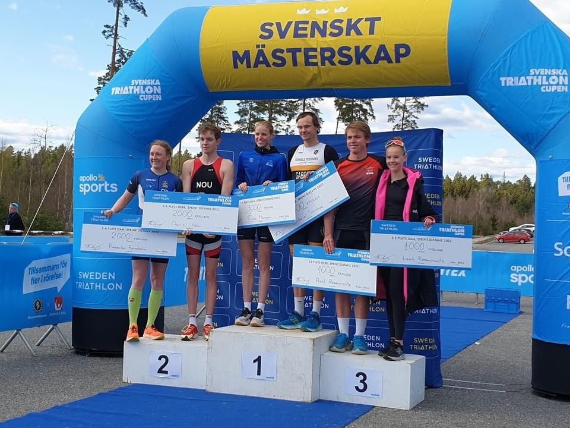

Triathlon är en uthållighetsidrott där momenten simning, cykel och löpning utförs i en följd. Det är en modern livsstilsidrott som kännetecknas av fart, styrka och uthållighet. Triathleter är målmedvetna och prioriterar en aktiv fritid, en sund livsstil och välbefinnande. Triathlon passar utmärkt både för motionären som tycker om allsidig träning och den topptränade elitidrottaren. Genom sin variation är det också en mycket rolig idrott för barn och ungdomar. Man tävlar på en mängd olika distanser. Allt från tävlingar som tar under en timma att genomföra, till tävlingar som eliten avverkar på över 8 timmar. Den klart övervägande delen av tävlingarna arrangeras på kortare distanser. När man tränar inför tävling genomförs oftast momenten var för sig, även om man ibland kör så kallade övergångspass simning-cykel eller cykel-löpning.
Vill du veta mer, KLICKA HÄR 